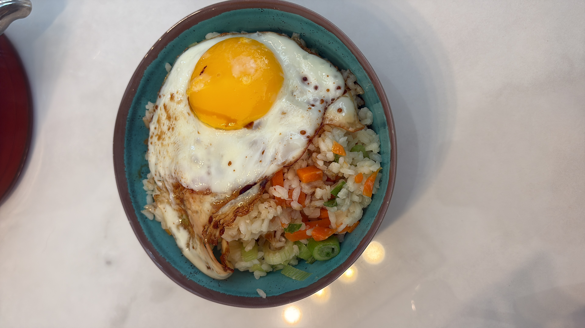

Alef's Fried Rice Breakfast
Want more recipes? back to home

Want a nice and probably nutricious breakfast? This is where to start! Just a few simple ingredients and you'll be making your own fried rice.
Ingredients
- 1 cup of rice
- 1 1/2 cups of water
- 1 of spring onion
- 1/2 a white onion
- 1 carrot
- 1 egg
- Soy sauce; to taste
- Sesame seed oil
Let's get cooking!
- Put the rice and the water into a pot and turn the stove to high temperature
- As soon as the water starts boiling, turn temperature down and simmer for 15-20 minutes
- While waiting for the rice to cook, dice the carrot and oniom while also chopping the spring onion
- Once the rice is cooked, move to a pan with sesame seed oil and combine with the chopped vegetables
- Whle stir-frying the rice, make a small egg sunny side up on another pan
- Move the rice into a bowl and add soy sauce to taste
- Add the egg and voilà, your perfectly average breakfast meal thing